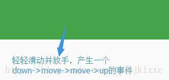
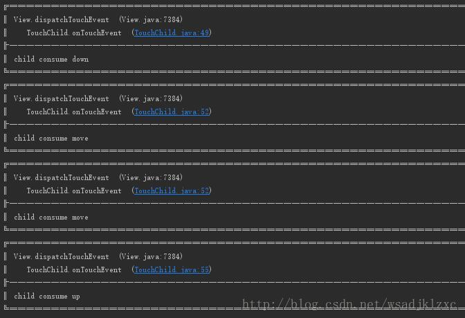
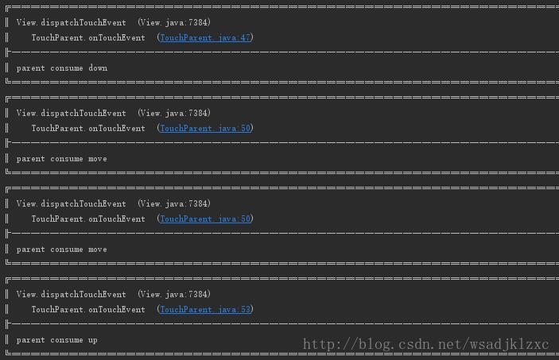
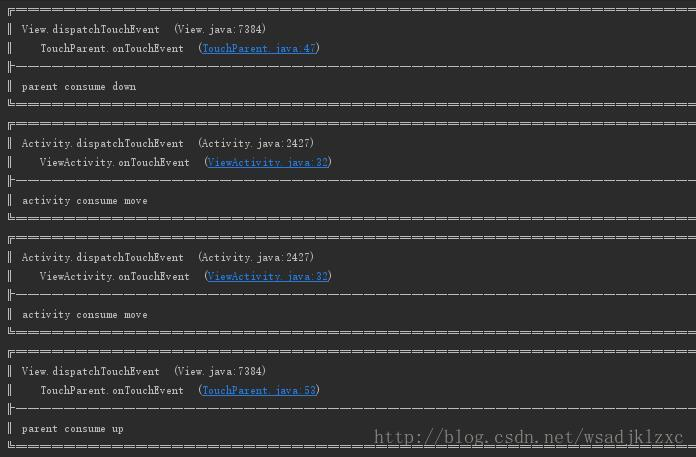
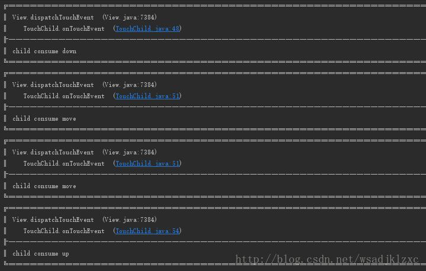
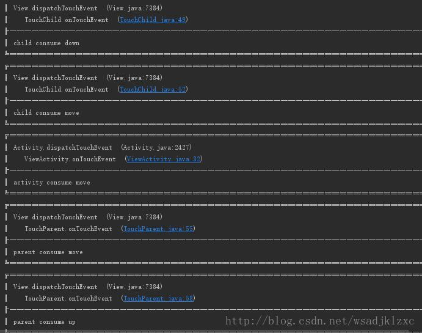
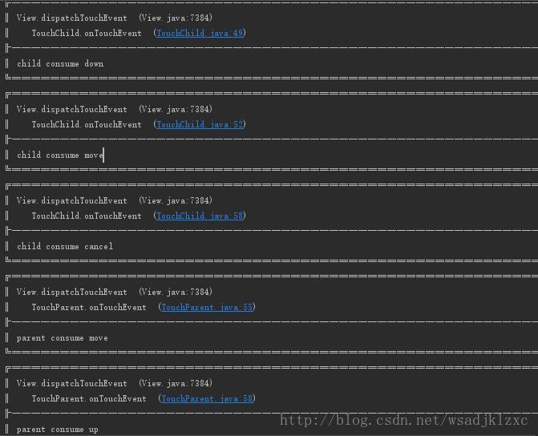
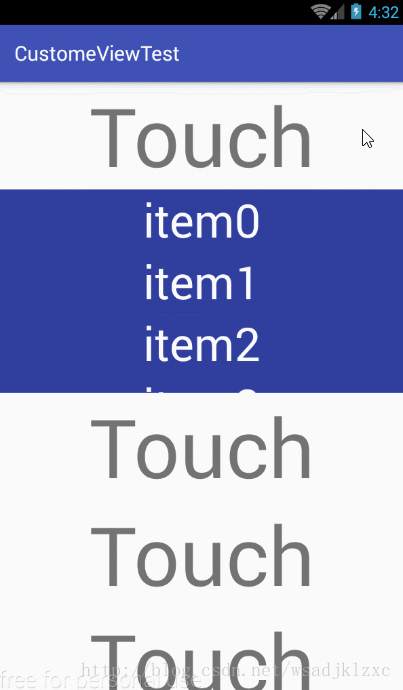

触摸事件处理框架 Android 的 View 和 ViewGroup 采用了 Composite(组合) 设计模式，View 的组合具有高度动态性，在这种情况下，由于触摸事件是从底层驱动传递至上层 View 对象，如果按照普通对象间传递信息的方式，将会很复杂，很难处理，这里 Android 采用了 Chain of Responsibility（责任链） 设计模式，触摸事件流将通过视图树，使每个 View 对象都有机会处理事件，一旦某个 View 选择接收事件流，那么整个事件将交给它处理，如果 View 选择不处理，那么事件流会继续传递，直到找到最后的处理者，在处理触摸事件时有几个重要的方法，在弄懂 Android 事件分发机制之前，需要先了解这几个方法的作用及关系。
核心方法
boolean dispatchEvent(MotionEvent e) 当触摸事件传递给当前 View 或 ViewGroup 时，此方法将会被调用，它会负责事件的分发工作，可能会将事件交给自己的 onTouchEvent 方法或子View来处理，返回值为是否消耗事件
boolean onIntercepteEvent(MotionEvent e) 此方法将被 dispatchEvent 方法调用，返回的是是否拦截此次事件，如果返回 true，事件将被拦截，事件交给自己的 onTouchEvent 处理，子 view 将不能接收到事件，否则交给子view处理，但子 view 可以通过一个方法设置一个标记来阻止事件的拦截。
boolean onTouchEvent(MotionEvent e) 负责消耗触摸事件，一般在此处处理触摸事件，返回值为是否消耗事件，若不消耗事件，事件将不会再次被传递，而是交给上层 View 进行处理
View 中存在两个方法，作用和 ViewGroup 相似
boolean dispatchEvent(MotionEvent e) 作用和 ViewGroup 类似，由于 View 一定会处理事件，所以 View 不存在 onIntercepteEvent 这个方法，因此 dispatchEvent 最终会将事件交给 onTouchEvent 方法处理
boolean onTouchEvent(MotionEvent e) 与 ViewGroup 作用相同
调用关系 上面介绍了每个方法的作用，下面用伪代码来描述他们的大致关系
1 2 3 4 5 6 7 8 9 10 11 12 public boolean dispatchTouchEvent (MotionEvent event) boolean consume = false ; if (onIntercepteEvent(event)) { consume = onTouchEvent(event); } else { consume = touchTarget.dispatchTouchEvent(); } return consume; }
上面的伪代码将事件处理模型描述了出来，事件总体是按照这个方式处理的，但涉及到 DOWN，MOVE 等具体事件时还需要详细探讨
触摸事件流向 上面介绍了触摸事件处理结构，下面介绍当一个触摸事件产生时，触摸事件的传递方向，当触摸屏幕产生触摸事件时，事件将会首先到达顶层 Activity 并交给它的 dispatchTouchEvent 方法来处理，虽然 Activity 不是 View，但它同样具有 dispatchTouchEvent和 onTouchEvent 方法，dispatchTouchEvent 会辗转调用顶层 View 的 dispatchTouchEvent 方法，并传递触摸事件，即开始按照上面伪代码描述的流程来传递事件，如果顶层 View 的 dispatchTouchEvent 返回 false 即事件没有被消耗，则会最终交给 Activity 自身的 onTouchEvent 方法处理
部分方法内部实现 在遇到事件冲突问题时，通常需要在自定义的 ViewGroup 或 View 中重写部分事件处理方法改变部分原有规则。
Activity-dispatchTouchEvent 可以看到 Activity 的 dispatchTouchEvent 的处理，就是之前所描述的
1 2 3 4 5 6 7 8 9 10 11 public boolean dispatchTouchEvent (MotionEvent ev) if (ev.getAction() == MotionEvent.ACTION_DOWN) { onUserInteraction(); } if (getWindow().superDispatchTouchEvent(ev)) { return true ; } return onTouchEvent(ev); }
View-dispatchTouchEvent View 的 dispatchEventEvent 方法，当 OnTouchListener 未处理事件，事件将交给 onTouchEvent 处理。
1 2 3 4 5 6 7 8 9 10 11 12 13 14 15 16 17 18 19 20 21 22 23 24 25 26 27 28 29 30 31 32 33 public boolean dispatchTouchEvent (MotionEvent event) ... boolean result = false ; if (mInputEventConsistencyVerifier != null ) { mInputEventConsistencyVerifier.onTouchEvent(event, 0 ); } final int actionMasked = event.getActionMasked(); if (actionMasked == MotionEvent.ACTION_DOWN) { stopNestedScroll(); } if (onFilterTouchEventForSecurity(event)) { if ((mViewFlags & ENABLED_MASK) == ENABLED && handleScrollBarDragging(event)) { result = true ; } ListenerInfo li = mListenerInfo; if (li != null && li.mOnTouchListener != null && (mViewFlags & ENABLED_MASK) == ENABLED && li.mOnTouchListener.onTouch(this , event)) { result = true ; } if (!result && onTouchEvent(event)) { result = true ; } } if (actionMasked == MotionEvent.ACTION_UP || actionMasked == MotionEvent.ACTION_CANCEL || (actionMasked == MotionEvent.ACTION_DOWN && !result)) { stopNestedScroll(); } return result; }
Viewgroup-onInterceptTouchEvent ViewGroup 的 onInterceptTouchEvent 的方法实现，
1 2 3 4 5 6 7 8 9 public boolean onInterceptTouchEvent (MotionEvent ev) if (ev.isFromSource(InputDevice.SOURCE_MOUSE) && ev.getAction() == MotionEvent.ACTION_DOWN && ev.isButtonPressed(MotionEvent.BUTTON_PRIMARY) && isOnScrollbarThumb(ev.getX(), ev.getY())) { return true ; } return false ; }
常用的几个布局，包括 LiearnLayout、RelativeLayout、FrameLayout，都没有重写 onInterceptTouchEvent 方法，使用的都是 ViewGroup 的实现，只有在手指或者鼠标触摸时返回 true 选择拦截事件，其他情况都返回 false，不拦截事件，事件将交给子 View 处理，当需要拦截事件交给 ViewGroup 处理的时候，可以重写这个方法，改变它默认的规则。
View-onTouchEvent ViewGroup 和 View 使用相同的 onTouchEvent 方法实现，可以看出 View 默认实现了点击事件的处理，对于设置了 DISABLE 属性的 view，如果设置了可点击，例如 CLICKABLE 或 LONGCLICKABLE 属性，则会消耗事件，
1 2 3 4 5 6 7 8 9 10 11 12 13 14 15 16 17 18 19 20 21 22 23 24 25 26 27 28 29 30 31 32 33 34 35 36 37 38 39 40 41 42 43 44 45 46 47 48 49 50 51 52 53 54 55 56 57 58 59 60 61 62 63 64 65 66 67 68 69 70 71 72 73 74 75 76 77 78 79 80 81 82 83 84 85 86 87 88 89 90 91 92 93 94 95 96 97 98 99 100 101 public boolean onTouchEvent (MotionEvent event) final float x = event.getX(); final float y = event.getY(); final int viewFlags = mViewFlags; final int action = event.getAction(); if ((viewFlags & ENABLED_MASK) == DISABLED) { if (action == MotionEvent.ACTION_UP && (mPrivateFlags & PFLAG_PRESSED) != 0 ) { setPressed(false ); } return (((viewFlags & CLICKABLE) == CLICKABLE || (viewFlags & LONG_CLICKABLE) == LONG_CLICKABLE) || (viewFlags & CONTEXT_CLICKABLE) == CONTEXT_CLICKABLE); } if (mTouchDelegate != null ) { if (mTouchDelegate.onTouchEvent(event)) { return true ; } } if (((viewFlags & CLICKABLE) == CLICKABLE || (viewFlags & LONG_CLICKABLE) == LONG_CLICKABLE) || (viewFlags & CONTEXT_CLICKABLE) == CONTEXT_CLICKABLE) { switch (action) { case MotionEvent.ACTION_UP: boolean prepressed = (mPrivateFlags & PFLAG_PREPRESSED) != 0 ; if ((mPrivateFlags & PFLAG_PRESSED) != 0 || prepressed) { boolean focusTaken = false ; if (isFocusable() && isFocusableInTouchMode() && !isFocused()) { focusTaken = requestFocus(); } if (prepressed) { setPressed(true , x, y); } if (!mHasPerformedLongPress && !mIgnoreNextUpEvent) { removeLongPressCallback(); if (!focusTaken) { if (mPerformClick == null ) { mPerformClick = new PerformClick(); } if (!post(mPerformClick)) { performClick(); } } } if (mUnsetPressedState == null ) { mUnsetPressedState = new UnsetPressedState(); } if (prepressed) { postDelayed(mUnsetPressedState, ViewConfiguration.getPressedStateDuration()); } else if (!post(mUnsetPressedState)) { mUnsetPressedState.run(); } removeTapCallback(); } mIgnoreNextUpEvent = false ; break ; case MotionEvent.ACTION_DOWN: mHasPerformedLongPress = false ; if (performButtonActionOnTouchDown(event)) { break ; } boolean isInScrollingContainer = isInScrollingContainer(); if (isInScrollingContainer) { mPrivateFlags |= PFLAG_PREPRESSED; if (mPendingCheckForTap == null ) { mPendingCheckForTap = new CheckForTap(); } mPendingCheckForTap.x = event.getX(); mPendingCheckForTap.y = event.getY(); postDelayed(mPendingCheckForTap, ViewConfiguration.getTapTimeout()); } else { setPressed(true , x, y); checkForLongClick(0 , x, y); } break ; case MotionEvent.ACTION_CANCEL: setPressed(false ); removeTapCallback(); removeLongPressCallback(); mInContextButtonPress = false ; mHasPerformedLongPress = false ; mIgnoreNextUpEvent = false ; break ; case MotionEvent.ACTION_MOVE: drawableHotspotChanged(x, y); if (!pointInView(x, y, mTouchSlop)) { removeTapCallback(); if ((mPrivateFlags & PFLAG_PRESSED) != 0 ) { removeLongPressCallback(); setPressed(false ); } } break ; } return true ; } return false ; }
ViewGroup-dispatchTouchEvent 分析 上面是事件分发的流程和参与事件分发的部分方法实现，最后对 ViewGroup 的 dispatchTouchEvent 方法进行分析，它是事件分发机制的核心实现。
1 2 3 4 5 6 7 8 9 10 11 12 13 14 15 16 17 18 19 20 21 22 23 24 25 26 27 28 29 30 31 32 33 34 35 36 37 38 39 40 41 42 43 44 45 46 47 48 49 50 51 52 53 54 55 56 57 58 59 60 61 62 63 64 65 66 67 68 69 70 71 72 73 74 75 76 77 78 79 80 81 82 83 84 85 86 87 88 89 90 91 92 93 94 95 96 97 98 99 100 101 102 103 104 105 106 107 108 109 110 111 112 113 114 115 116 117 118 119 120 121 122 123 124 125 126 127 128 129 130 131 132 133 134 135 136 137 138 139 140 141 142 143 144 145 146 147 148 149 150 151 152 153 154 155 156 157 158 159 160 161 162 163 164 165 166 167 168 169 170 171 172 173 174 175 176 177 178 179 180 181 182 183 184 185 186 187 188 189 190 191 192 193 194 @Override public boolean dispatchTouchEvent (MotionEvent ev) if (mInputEventConsistencyVerifier != null ) { mInputEventConsistencyVerifier.onTouchEvent(ev, 1 ); } if (ev.isTargetAccessibilityFocus() && isAccessibilityFocusedViewOrHost()) { ev.setTargetAccessibilityFocus(false ); } boolean handled = false ; if (onFilterTouchEventForSecurity(ev)) { final int action = ev.getAction(); final int actionMasked = action & MotionEvent.ACTION_MASK; if (actionMasked == MotionEvent.ACTION_DOWN) { cancelAndClearTouchTargets(ev); resetTouchState(); } final boolean intercepted; if (actionMasked == MotionEvent.ACTION_DOWN || mFirstTouchTarget != null ) { final boolean disallowIntercept = (mGroupFlags & FLAG_DISALLOW_INTERCEPT) != 0 ; if (!disallowIntercept) { intercepted = onInterceptTouchEvent(ev); ev.setAction(action); } else { intercepted = false ; } } else { intercepted = true ; } if (intercepted || mFirstTouchTarget != null ) { ev.setTargetAccessibilityFocus(false ); } final boolean canceled = resetCancelNextUpFlag(this ) || actionMasked == MotionEvent.ACTION_CANCEL; final boolean split = (mGroupFlags & FLAG_SPLIT_MOTION_EVENTS) != 0 ; TouchTarget newTouchTarget = null ; boolean alreadyDispatchedToNewTouchTarget = false ; if (!canceled && !intercepted) { View childWithAccessibilityFocus = ev.isTargetAccessibilityFocus() ? findChildWithAccessibilityFocus() : null ; if (actionMasked == MotionEvent.ACTION_DOWN || (split && actionMasked == MotionEvent.ACTION_POINTER_DOWN) || actionMasked == MotionEvent.ACTION_HOVER_MOVE) { final int actionIndex = ev.getActionIndex(); final int idBitsToAssign = split ? 1 << ev.getPointerId(actionIndex) : TouchTarget.ALL_POINTER_IDS; removePointersFromTouchTargets(idBitsToAssign); final int childrenCount = mChildrenCount; if (newTouchTarget == null && childrenCount != 0 ) { final float x = ev.getX(actionIndex); final float y = ev.getY(actionIndex); final ArrayList<View> preorderedList = buildTouchDispatchChildList(); final boolean customOrder = preorderedList == null && isChildrenDrawingOrderEnabled(); final View[] children = mChildren; for (int i = childrenCount - 1 ; i >= 0 ; i--) { final int childIndex = getAndVerifyPreorderedIndex(childrenCount, i, customOrder); final View child = getAndVerifyPreorderedView(preorderedList, children, childIndex); if (childWithAccessibilityFocus != null ) { if (childWithAccessibilityFocus != child) { continue ; } childWithAccessibilityFocus = null ; i = childrenCount - 1 ; } if (!canViewReceivePointerEvents(child) || !isTransformedTouchPointInView(x, y, child, null )) { ev.setTargetAccessibilityFocus(false ); continue ; } newTouchTarget = getTouchTarget(child); if (newTouchTarget != null ) { newTouchTarget.pointerIdBits |= idBitsToAssign; break ; } resetCancelNextUpFlag(child); if (dispatchTransformedTouchEvent(ev, false , child, idBitsToAssign)) { mLastTouchDownTime = ev.getDownTime(); if (preorderedList != null ) { for (int j = 0 ; j < childrenCount; j++) { if (children[childIndex] == mChildren[j]) { mLastTouchDownIndex = j; break ; } } } else { mLastTouchDownIndex = childIndex; } mLastTouchDownX = ev.getX(); mLastTouchDownY = ev.getY(); newTouchTarget = addTouchTarget(child, idBitsToAssign); alreadyDispatchedToNewTouchTarget = true ; break ; } ev.setTargetAccessibilityFocus(false ); } if (preorderedList != null ) preorderedList.clear(); } if (newTouchTarget == null && mFirstTouchTarget != null ) { newTouchTarget = mFirstTouchTarget; while (newTouchTarget.next != null ) { newTouchTarget = newTouchTarget.next; } newTouchTarget.pointerIdBits |= idBitsToAssign; } } } if (mFirstTouchTarget == null ) { handled = dispatchTransformedTouchEvent(ev, canceled, null , TouchTarget.ALL_POINTER_IDS); } else { TouchTarget predecessor = null ; TouchTarget target = mFirstTouchTarget; while (target != null ) { final TouchTarget next = target.next; if (alreadyDispatchedToNewTouchTarget && target == newTouchTarget) { handled = true ; } else { final boolean cancelChild = resetCancelNextUpFlag(target.child) || intercepted; if (dispatchTransformedTouchEvent(ev, cancelChild, target.child, target.pointerIdBits)) { handled = true ; } if (cancelChild) { if (predecessor == null ) { mFirstTouchTarget = next; } else { predecessor.next = next; } target.recycle(); target = next; continue ; } } predecessor = target; target = next; } } if (canceled || actionMasked == MotionEvent.ACTION_UP || actionMasked == MotionEvent.ACTION_HOVER_MOVE) { resetTouchState(); } else if (split && actionMasked == MotionEvent.ACTION_POINTER_UP) { final int actionIndex = ev.getActionIndex(); final int idBitsToRemove = 1 << ev.getPointerId(actionIndex); removePointersFromTouchTargets(idBitsToRemove); } } if (!handled && mInputEventConsistencyVerifier != null ) { mInputEventConsistencyVerifier.onUnhandledEvent(ev, 1 ); } return handled; }
第一部分代码
当 DOWN 事件到来时，清空保存的状态，包括 mFirstTouchTarget 和 重置 FLAG_DISALLOW_INTERCEPT 标志位。
当 DOWN 事件到来时 或 mFisrtTouchTarget 不为空时，会调用 onInterceptTouchEvent 询问是否拦截事件，如果FLAG_DISALLOW_INTERCEPT 标志位被设置，则不会拦截事件。
从下一段代码可以获取到，mFisrtTouchTarget 代表是否有子View处理了事件，FLAG_DISALLOW_INTERCEPT 标志位可通过在子requestDisallowInterceptTouchEvent() 方法来设置
第二部分代码
如果 ViewGroup 未拦截事件，那么开始寻找可以处理事件的子View，即利用 dispatchTransformedTouchEvent 方法把事件分dispatchTouchEvent 返回 true，那么将会调用 addTouchTarget 方法，将子TouchTarget 链表中，其中 mFirstTouchTarget 作为链表的头结点，这时 mFirstTouchTarget 被赋值，下次事件，如果FLAG_DISALLOW_INTERCEPT 标志，则可以阻止 ViewGroup 拦截事件。
在 dispatchTransformedTouchEvent 方法中，如果 child 参数不为空，就会调用子 View 的 dispatchTouchEvent 方法
1 2 3 4 5 6 7 8 9 10 11 12 13 14 15 16 17 18 19 20 21 22 23 24 25 26 27 28 29 30 31 32 33 34 35 36 37 38 39 40 41 42 43 private boolean dispatchTransformedTouchEvent (MotionEvent event, boolean cancel, View child, int desiredPointerIdBits) final boolean handled; final int oldAction = event.getAction(); if (cancel || oldAction == MotionEvent.ACTION_CANCEL) { event.setAction(MotionEvent.ACTION_CANCEL); if (child == null ) { handled = super .dispatchTouchEvent(event); } else { handled = child.dispatchTouchEvent(event); } event.setAction(oldAction); return handled; } final int oldPointerIdBits = event.getPointerIdBits(); final int newPointerIdBits = oldPointerIdBits & desiredPointerIdBits; if (newPointerIdBits == 0 ) { return false ; } final MotionEvent transformedEvent; if (newPointerIdBits == oldPointerIdBits) { if (child == null || child.hasIdentityMatrix()) { if (child == null ) { handled = super .dispatchTouchEvent(event); } else { final float offsetX = mScrollX - child.mLeft; final float offsetY = mScrollY - child.mTop; event.offsetLocation(offsetX, offsetY); handled = child.dispatchTouchEvent(event); event.offsetLocation(-offsetX, -offsetY); } return handled; } transformedEvent = MotionEvent.obtain(event); } else { transformedEvent = event.split(newPointerIdBits); } ... }
第三部分代码则是将事件分发给子 View，如果没有子 View 处理事件，那么交给自己处理，其中如果子 View 处理过事件，但是下次
从以上代码分析可得出一些结论；
如果 ViewGroup 在 DOWN事件 时拦截了事件，那么子 View 再也无法拦截事件，因为actionMasked == MotionEvent.ACTION_DOWN || mFirstTouchTarget != null 这个条件不会再次被满足。
如果在 DOWN事件 时被设置 FLAG_DISALLOW_INTERCEPT，则可以阻止 ViewGroup 拦截事件。
编码验证 现在在代码中通过一些用例对上面的分析即结论进行验证。
首先新建一个Activity，再实现它的 onTouchEvent 方法，并打印日志，日志使用了 Logger 开源库，日志更直观一些。
1 2 3 4 5 6 7 8 9 10 11 12 13 14 15 @Override public boolean onTouchEvent (MotionEvent event) switch (event.getActionMasked()) { case MotionEvent.ACTION_DOWN: Logger.d("activity consume down" ); return true ; case MotionEvent.ACTION_MOVE: Logger.d("activity consume move" ); return true ; case MotionEvent.ACTION_UP: Logger.d("activity consume up" ); return true ; } return super .onTouchEvent(event); }
然后在 Activity 布局中加入自定义的 ViewGroup TouchParent， 内部只重写了 onIntercepTouchEvent 和 onTouchEvent 方法。
1 2 3 4 5 6 7 8 9 10 11 12 13 14 15 16 17 18 19 20 21 22 23 24 25 26 27 28 29 30 @Override public boolean onInterceptTouchEvent (MotionEvent ev) final int eventMasked = ev.getActionMasked(); switch (eventMasked) { case MotionEvent.ACTION_DOWN: return false ; case MotionEvent.ACTION_MOVE: return false ; case MotionEvent.ACTION_UP: return false ; } return super .onInterceptTouchEvent(ev); } @Override public boolean onTouchEvent (MotionEvent event) final int eventMasked = event.getActionMasked(); switch (eventMasked) { case MotionEvent.ACTION_DOWN: Logger.d("parent consume down" ); return false ; case MotionEvent.ACTION_MOVE: Logger.d("parent consume move" ); return true ; case MotionEvent.ACTION_UP: Logger.d("parent consume up" ); return true ; } return super .onTouchEvent(event); }
上面的 TouchParent 里面包含了一个自定义的 View TouchChild，它只重写了 onTouchEvent 方法
1 2 3 4 5 6 7 8 9 10 11 12 13 14 15 16 @Override public boolean onTouchEvent (MotionEvent event) final int eventMasked = event.getActionMasked(); switch (eventMasked) { case MotionEvent.ACTION_DOWN: Logger.d("child consume down" ); return true ; case MotionEvent.ACTION_MOVE: Logger.d("child consume move" ); return true ; case MotionEvent.ACTION_UP: Logger.d("child consume up" ); return true ; } return super .onTouchEvent(event); }
好，现在上面都是默认情况，TouchParent 和 TouchChild 都默认处理所有事件，开始测试，现在用手指在 TouchChild 的绿色区域的位置向 TouchParent 的白色区域滑动并抬起手指，如下图

正常情况，TouchParent不拦截事件，那么TouchChild会处理所有事件，结果如下：

现在把 TouchParent 的 onIntercepTouchEvent 方法改一下，让它“只拦截” DOWN 事件，试试
1 2 3 4 5 6 7 8 9 switch (eventMasked) { case MotionEvent.ACTION_DOWN: return true ; case MotionEvent.ACTION_MOVE: return false ; case MotionEvent.ACTION_UP: return false ; }
结果是：

所以为什么是引号呢，这就验证了前面的，当 ViewGroup 决定拦截 DOWN 时，那么所有的事件都会交给它来处理，不会是表面上的只拦截DOWN事件，onInterceptTouchEvent 也将不会再被调用。
在 2 的基础上，把 TouchParent 的 onTouchEvent 的 MOVE 事件改成返回 false，不处理 MOVE 事件看看会怎样
1 2 3 4 5 6 @Override public boolean onTouchEvent (MotionEvent event) case MotionEvent.ACTION_MOVE: return false ; ... }

其中 MOVE 事件由于 TouchParent 没有处理，最终交给了 Activity 处理
现在把 TouchParent 里的 onInterceptTouchEvent 方法改为 DOWN 事件不拦截，MOVE 和 UP 事件拦截
1 2 3 4 5 6 7 8 9 10 11 12 13 @Override public boolean onInterceptTouchEvent (MotionEvent ev) final int eventMasked = ev.getActionMasked(); switch (eventMasked) { case MotionEvent.ACTION_DOWN: return false ; case MotionEvent.ACTION_MOVE: return true ; case MotionEvent.ACTION_UP: return true ; } return super .onInterceptTouchEvent(ev); }
然后把 TouchChild 里的 onTouchEvent 方法，在 DOWN 中调用 getParent().requestDisallowInterceptTouchEvent(true); 即，阻止 TouchParent 的事件拦截，测试一下：

可以看到，事件完全被TouchChild处理了，因为 TouchChild 使用 requestDisallowInterceptTouchEvent 阻止了 TouchParent 的拦截，不过如果 TouchParent在down 事件里选择拦截的话，那么 TouchChild 将无法进行拦截，这里要注意的是 requestDisallowInterceptTouchEvent 是在 onTouchEvent 里调用的，推荐在 dispatchTouchEvent 方法里进行过拦截，dispatchTouchEvent 是必然会接受到事件的，而 onTouchEvent 可能受到 OnTouchListener 的影响而不被调用。
现在再在4的基础上在 TouchChild 里面的 onTouchEvent 里 MOVE 事件里调用 getParent().requestDisallowInterceptTouchEvent(false); 把事件还给TouchParent会怎样

这里多做了一次 MOVE 事件，为了看的更清楚，当 TouchChild 在 DOWN 事件里阻拦了 TouchParent 的时候，TouchChild 将会处理下一个 MOVE，在这里TouchChild有把事件交还给 TouchParent，这时 TouchParent 拦截了MOVE 事件，事件将会交给 TouchParent 来处理，但是很奇怪为什么会下一个 MOVE 会被 Activity 处理呢，然后才是 TouchParent 处理 MOVE，因为从前面的结论可以知道，上次是 TouchChild 处理的事件，这次被拦截的话，此次的事件将会变成一个 CANCEL 事件并分发给子 view，这里 TouchChild 没有处理 CANCEL 事件，所以最终交给了 Activity 处理，现在让 TouchChild 处理 CANCEL
1 2 3 4 5 6 7 8 9 @Override public boolean onTouchEvent (MotionEvent event) case MotionEvent.ACTION_CANCEL: Logger.d("child consume cancel" ); return true ; } return super .onTouchEvent(event); }

好了，事件确实是 CANCEL 事件，这次被 TouchChild 消耗了，Activity 就不会处理了
以上测试了几个典型例子，对结论进行了论证，下面是Android事件分发机制在处理事件冲突时的应用。
触摸事件冲突处理 一般在项目中可能会遇到界面比较复杂的情况，而且可能是可滑动的布局相互嵌套的情况，比如，ScrollView 里面有一个 ListView，两个 view 都是纵向划动的，一定会有冲突，还有 ViewPager 里面有 ScrollView，或 ScrollView 里面有 ViewPager，这两个是横向和纵向划动的冲突，这种情况可能与用户体验相关，应该根据滑动的动作来决定事件交给哪个 View 来处理，为了解决这个问题，就需要对事件分发机制有所熟悉。
例如或 ScrollView 里面有 ViewPager 这种情况，当用户偏向横划的时候，相应的 ViewPager 就要做出内容的偏移，当用户偏向竖划的时后，ScrollView 就要滚动里面的内容，针对这种情况，就产生了一个判断条件，就是用户横向或纵向划动，转化为逻辑就是，MOVE 事件时 x 和 y 轴 滑动距离相比较，伪代码如下：
1 2 3 4 5 if (x > y ) { } else { }
那就是说，x > y 时，ViewPager会拦截 ScrollView 的事件，自己来处理，否则 ScrollView 拦截 ViewPager 的事件，自己来处理
针对此情况，一般有两种拦截的方法，也就是触摸事件冲突处理的方法。
外部拦截法 外部拦截法以嵌套布局外层 ViewGroup 为主，重写 onInterceptTouchEvent 方法，事件是否拦截，完全由 ViewGroup 决定。
1 2 3 4 5 6 7 8 9 10 11 12 13 14 15 16 17 18 19 20 21 22 public void onInterceptTouch (MotionEvent ev) boolean intercepted = false ; switch (event.getAction()){ case MotionEvent.ACTION_DOWN: intercepted = false ; break ; case MotionEvent.ACTION_MOVE: if (父容器自身需要此事件){ intercepted = true ; }else { intercepted = false ; } break ; case MotionEvent.ACTION_UP: intercepted = false ; break ; } return intercepted; }
这种方法的事件决定权完全在外部 ViewGroup 上，其中为什么不拦截 DOWN 事件呢，因为一旦拦截，那么事件就一定会给自己处理了，子 View 就没有选择的余地了。
内部拦截法 内部拦截法以嵌套布局内层 View 为主，主要重写子 View 的 dispatchTouchEvent 方法，这种方法需要 ViewGroup 不拦截 DOWN 事件，然后通过调用 ViewGroup 的 requestDisallowInterceptTouchEvent 来控制事件传递。
1 2 3 4 5 6 7 8 9 10 11 12 13 14 15 16 17 public void dispatchTouchEvent (MotionEvent ev) switch (event.getAction()){ case MotionEvent.ACTION_DOWN: parent.requestDisallowInterceptTouchEvent(true ); break ; case MotionEvent.ACTION_MOVE: if (){ parent.requestDisallowInterceptTouchEvent(false ); } break ; case MotionEvent.ACTION_UP: break ; } return super .dispatchTouchEvent(event); }
其实在 ScrollView 里面有 ViewPager 这种情况，源码里已经了处理，所以用的时候没有任何问题，下面截取了 ViewPager 的 onInterceptTouchEvent 的部分源码
1 2 3 4 5 6 7 8 9 10 11 12 13 14 15 16 17 18 19 20 21 22 23 24 25 26 27 28 case MotionEvent.ACTION_DOWN: { mLastMotionX = mInitialMotionX = ev.getX(); mLastMotionY = mInitialMotionY = ev.getY(); mActivePointerId = ev.getPointerId(0 ); mIsUnableToDrag = false ; mIsScrollStarted = true ; mScroller.computeScrollOffset(); if (mScrollState == SCROLL_STATE_SETTLING && Math.abs(mScroller.getFinalX() - mScroller.getCurrX()) > mCloseEnough) { mScroller.abortAnimation(); mPopulatePending = false ; populate(); mIsBeingDragged = true ; requestParentDisallowInterceptTouchEvent(true ); setScrollState(SCROLL_STATE_DRAGGING); } else { completeScroll(false ); mIsBeingDragged = false ; } break ; }
会发现在 DOWN 事件中有一个 requestParentDisallowInterceptTouchEvent(true)，这里就是拦截外层 View 使用的内部拦截法。
1 2 3 4 5 6 private void requestParentDisallowInterceptTouchEvent (boolean disallowIntercept) final ViewParent parent = getParent(); if (parent != null ) { parent.requestDisallowInterceptTouchEvent(disallowIntercept); } }
在实际运用中，需要对于情况来选择合适的方法。
事件冲突处理实例 这里假设一种情况，ScrollView 里面有一个 ListView，这两个 View 嵌套一定会出现问题，首先正常的在 Activity 里面放上一个 ScrollView 然后在里面放上一个 ListView，其中 ScrollView 是可以滚动的，ListView 高度限制为 200dp，内部子元素有 20 个，代码很简单，核心部分如下：
1 2 3 4 5 6 7 8 9 10 11 12 13 14 15 16 17 18 19 20 21 22 23 24 25 26 27 28 29 30 31 32 ListView listView = (ListView)findViewById(R.id.lv_content); listView.setAdapter( new BaseAdapter() { @Override public int getCount () return 20 ; } @Override public Object getItem (int position) return null ; } @Override public long getItemId (int position) return position; } @Override public View getView (int position, View convertView, ViewGroup parent) if (convertView == null ) { TextView textView = new TextView(parent.getContext()); textView.setLayoutParams(new AbsListView.LayoutParams( ViewGroup.LayoutParams.MATCH_PARENT, ViewGroup.LayoutParams.MATCH_PARENT )); textView.setTextSize(45 ); textView.setTextColor(Color.WHITE); textView.setGravity(Gravity.CENTER); textView.setText("item" + position); convertView = textView; } else { ((TextView)convertView).setText("item" + position); } return convertView; } } );
运行一下

会发现 ListView 根本无法滑动，肯定是 MOVE 事件完全被 ScrollView 拦截了，导致 ListView 接收不到事件，也就无法响应滑动，DOWN事件一般是不会被 ScrollView 拦截的，现在就想办法让 ListView 滑动，解决它们的冲突
首先需要一个条件，就是什么时候让 ListView 滑动，什么时候再把事件交还给 ScrollView，让它继续滑动，那么现在条件是这样，当手指落在 ListView 上并移动时，ListView 完全处理 MOVE 事件，当 ListView 达到底部的极限时且手指继续向上滑动 或 当 ListView 达到顶部的极限时且手指继续向下滑动把事件交给 ScrollView 处理，针对这个条件，发现决定事件的主要是 ListView，那么这里采用内部拦截法，重写 ListView 的事件处理方法，下面是完整代码和实现效果
1 2 3 4 5 6 7 8 9 10 11 12 13 14 15 16 17 18 19 20 21 22 23 24 25 26 27 28 29 30 31 32 33 34 35 36 37 38 39 40 41 42 43 44 45 46 47 48 49 50 51 52 53 54 55 56 57 58 59 60 61 62 63 64 65 66 67 68 69 70 71 72 73 74 public final class TouchListView extends ListView public TouchListView (Context context) super (context); } public TouchListView (Context context, AttributeSet attrs) super (context, attrs); } public TouchListView (Context context, AttributeSet attrs, int defStyleAttr) super (context, attrs, defStyleAttr); } private int mLastY; @Override public boolean dispatchTouchEvent (MotionEvent ev) final int eventMasked = ev.getActionMasked(); final int y = (int ) ev.getY(); switch (eventMasked) { case MotionEvent.ACTION_DOWN: mLastY = y; getParent().requestDisallowInterceptTouchEvent(true ); break ; case MotionEvent.ACTION_MOVE: if (y < mLastY && checkScrollBottomLimit(this )) { getParent().requestDisallowInterceptTouchEvent(false ); } else if (y > mLastY && checkScrollTopLimit(this )) { getParent().requestDisallowInterceptTouchEvent(false ); } mLastY = y; break ; case MotionEvent.ACTION_UP: break ; } return super .dispatchTouchEvent(ev); } private boolean checkScrollBottomLimit (ListView listView) if (listView.getLastVisiblePosition() == listView.getCount() - 1 ) { final View lastChild = listView.getChildAt( listView.getChildCount() - 1 ); int lastChildBottom = listView.getTop() + lastChild.getBottom(); if (lastChildBottom == listView.getBottom()) { return true ; } } return false ; } private boolean checkScrollTopLimit (ListView listView) if (listView.getFirstVisiblePosition() == 0 ) { final View lastChild = listView.getChildAt(0 ); if (lastChild.getTop() == 0 ) { return true ; } } return false ; } }
感觉有点别扭，例如当 ListView 达到底部的极限时且手指继续向上滑动，释放事件，ScrollView 继续滚动，但是要再向下滑动时，手指还在ListView上，按自然滑动的规则 ListView 内容应该向下滚动，但这时事件还是 ScrollView 在处理，所以它会跟着手一起滚动，这里可以用另一种比较麻烦的方法，将事件直接通过 ListView 的对象，调用它的 onTouchEvent 传递过去，这个问题先留下来。